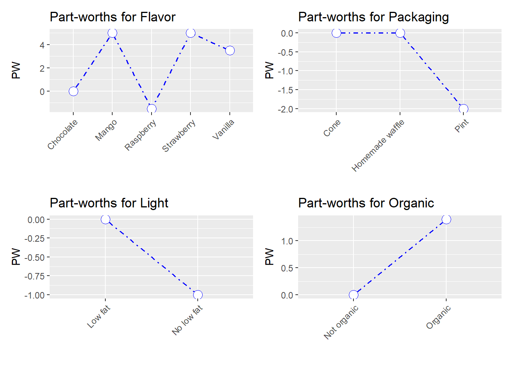

Análise Conjunta
Neste capítulo, você aprenderá como realizar uma análise conjunta. A análise conjunta começa a partir de uma pesquisa na qual as pessoas avaliam ou escolhem entre produtos (por exemplo, carros) que diferem em vários atributos (por exemplo, segurança, eficiência de combustível, conforto etc.). A partir dessas classificações ou escolhas, a análise determina o valor que as pessoas atribuem aos diferentes atributos do produto (por exemplo, quanto peso as pessoas atribuem à segurança ao escolher entre carros). Essas informações podem ser usadas no desenvolvimento de produtos.
Dados
Importação
Analisaremos os dados de uma pesquisa em que 15 consumidores foram convidados a avaliar dez sorvetes. Cada sorvete tinha um ‘perfil’ diferente, ou seja, uma combinação diferente de níveis de quatro atributos: sabor (framboesa, chocolate, morango, manga, baunilha), embalagem (waffle caseiro, casquinha, caneca), leve (com pouca gordura ou não) e orgânico (orgânico ou não). Todos os 15 entrevistados classificaram os dez perfis, fornecendo uma pontuação entre 1 e 10.
Usamos os dados fornecidos pelo www.xlstat.com, descritos em seu tutorial sobre como fazer análises conjuntas no Excel. Faça o download dos dados aqui.
## -- Attaching packages -------------------------------------------------- tidyverse 1.3.0 --## v ggplot2 3.3.2 v purrr 0.3.4
## v tibble 3.0.3 v dplyr 1.0.0
## v tidyr 1.1.2 v stringr 1.4.0
## v readr 1.3.1 v forcats 0.5.0## -- Conflicts ----------------------------------------------------- tidyverse_conflicts() --
## x dplyr::filter() masks stats::filter()
## x dplyr::lag() masks stats::lag()Manipulação
## # A tibble: 10 x 20
## Observations Flavor Packaging Light Organic `Individual 1` `Individual 2`
## <chr> <chr> <chr> <chr> <chr> <dbl> <dbl>
## 1 Profile 1 Raspb~ Homemade~ No l~ Not or~ 1 6
## 2 Profile 2 Choco~ Cone No l~ Organic 4 7
## 3 Profile 3 Raspb~ Pint Low ~ Organic 2 1
## 4 Profile 4 Straw~ Pint No l~ Organic 7 5
## 5 Profile 5 Straw~ Cone Low ~ Not or~ 9 8
## 6 Profile 6 Choco~ Homemade~ No l~ Not or~ 3 2
## 7 Profile 7 Vanil~ Pint Low ~ Not or~ 5 9
## 8 Profile 8 Mango Homemade~ Low ~ Organic 10 10
## 9 Profile 9 Mango Pint No l~ Not or~ 6 4
## 10 Profile 10 Vanil~ Homemade~ No l~ Organic 8 3
## # ... with 13 more variables: `Individual 3` <dbl>, `Individual 4` <dbl>,
## # `Individual 5` <dbl>, `Individual 6` <dbl>, `Individual 7` <dbl>,
## # `Individual 8` <dbl>, `Individual 9` <dbl>, `Individual 10` <dbl>,
## # `Individual 11` <dbl>, `Individual 12` <dbl>, `Individual 13` <dbl>,
## # `Individual 14` <dbl>, `Individual 15` <dbl>Quando inspecionamos os dados, vemos que temos uma coluna para cada entrevistado. Essa é uma maneira incomum de armazenar dados (normalmente temos uma linha por respondente), então vamos reestruturar nosso conjunto de dados com a função de coleta (como fizemos https://bookdown.org/content/1340/rmanova.html#rmanova):
icecream <- icecream %>%
gather(respondent, rating, starts_with("Individual")) %>% # o entrevistado acompanha o respondente, a classificacao armazena as classificacoes do entrevistado e queremos empilhar todas as variaveis que comecam com Individual
rename("profile" = "Observations") %>% # renomeia Observations para profile
mutate(profile = factor(profile), respondent = factor(respondent), # fatorar identificadores
Flavor = factor(Flavor), Packaging = factor(Packaging), Light = factor(Light), Organic = factor(Organic)) # fatorar os atributos do sorvete
# Amplo conjunto de dados: uma linha por unidade de observacao (aqui: perfil) e varias colunas para as diferentes observacoes (aqui: respondentes)
# Conjunto de dados longo: uma linha por observacao (aqui: combinacao de perfil x respondente)
# Converter de grande para longo significa que estamos empilhando varias colunas umas sobre as outras. Para isso, precisamos de uma variavel extra para acompanhar qual coluna estamos lidando.
# A funcao de coleta converte conjuntos de dados de amplos para longos.
# O primeiro argumento (respondente) nos dira com qual coluna estamos lidando. Essa eh a variavel que armazenara os nomes das colunas que estamos empilhando.
# O segundo argumento (classificacao) armazenara as colunas reais empilhadas umas sobre as outras.
# Os argumentos a seguir (todas as variaveis com nomes que comecam com Individual) sao as colunas que queremos empilhar.
icecream[1:10,]## # A tibble: 10 x 7
## profile Flavor Packaging Light Organic respondent rating
## <fct> <fct> <fct> <fct> <fct> <fct> <dbl>
## 1 Profile 1 Raspberry Homemade waffle No low f~ Not organ~ Individual~ 1
## 2 Profile 2 Chocolate Cone No low f~ Organic Individual~ 4
## 3 Profile 3 Raspberry Pint Low fat Organic Individual~ 2
## 4 Profile 4 Strawberry Pint No low f~ Organic Individual~ 7
## 5 Profile 5 Strawberry Cone Low fat Not organ~ Individual~ 9
## 6 Profile 6 Chocolate Homemade waffle No low f~ Not organ~ Individual~ 3
## 7 Profile 7 Vanilla Pint Low fat Not organ~ Individual~ 5
## 8 Profile 8 Mango Homemade waffle Low fat Organic Individual~ 10
## 9 Profile 9 Mango Pint No low f~ Not organ~ Individual~ 6
## 10 Profile 10 Vanilla Homemade waffle No low f~ Organic Individual~ 8É melhor usar o Visualizador aqui (clique duas vezes no icecream} objeto no painel Ambiente ou digite View(icecream))} para ver que existem dez linhas (10 perfis) por respondente agora.
As demais variáveis são:
- profile é um identificador para os diferentes sorvetes
- Flavor, Packaging, Light, Organic são os quatro atributos que compõem o perfil de um sorvete
Recapitulando: importação e manipulação
Aqui está o que fizemos até agora, em uma sequência ordenada de operações canalizadas (faça o download dos dados http://users.telenet.be/samuelfranssens/tutorial_data/icecream.xlsx:)
#library(tidyverse)
#library(readxl)
#icecream <- read_excel("icecream.xlsx") %>%
# gather(respondent, rating, starts_with("Individual")) %>% # o entrevistado acompanha o respondente, a classificacao armazena as classificacoes do entrevistado e queremos empilhar todas as variaveis que comecam com Individual
# rename("profile" = "Observations") %>%
# mutate(profile = factor(profile), respondent = factor(respondent),
# Flavor = factor(Flavor), Packaging = factor(Packaging), Light = factor(Light), Organic = factor(Organic))Design de experimentos
Quando inspecionamos nosso conjunto de dados, vemos que o flavor possui 5 níveis (framboesa, chocolate, morango, manga, baunilha), packaging possui 3 níveis (waffle caseiro, cone, cerveja), a Light possui 2 níveis (baixo teor de gordura versus não), e Organic} tem 2 níveis (orgânico vs. não). O objetivo de uma análise conjunta é estimar até que ponto cada nível de atributo afeta a classificação do sorvete.
Para fazer isso, o fabricante de sorvete poderia criar 5×3×2x2 = 60 sorvetes diferentes e peça às pessoas para avaliarem tudo isso. Isso fornecerá ao fabricante uma boa estimativa da importância de cada atributo e de todas as possíveis interações. No entanto, classificar 60 sorvetes é difícil para os participantes e um estudo tão grande seria caro para o fabricante financiar. Na prática, os pesquisadores nessa situação solicitarão que as pessoas classifiquem um subconjunto desses 60 sorvetes. Nesta seção, discutiremos como selecionar um subconjunto (por exemplo, 10 sorvetes) de todas as combinações possíveis de nível de atributo (ou seja, 60 sorvetes) que ainda nos permitirão obter boas estimativas dos efeitos mais importantes.
No conjunto de dados, já temos as classificações para dez perfis, portanto a decisão de quais sorvetes para teste já foi tomada. No entanto, vamos desconsiderar o fato de já termos os dados e considerar as decisões que precisam ser tomadas antes da coleta de dados. Em outras palavras, vamos discutir como passamos de um fatorial completo (todas as 60 combinações) para um design fracionário (menos de 60 combinações).
A função doe (projeto de experimentos) do pacote radiant} nos ajudará a decidir sobre os projetos de estudo. Radiant é um pacote do R para business analytics.
A discussão a seguir da função doe é baseada na discussão da Radiant sobre essa função.
## Loading required package: radiant.data## Loading required package: magrittr##
## Attaching package: 'magrittr'## The following object is masked from 'package:purrr':
##
## set_names## The following object is masked from 'package:tidyr':
##
## extract## Loading required package: lubridate##
## Attaching package: 'lubridate'## The following objects are masked from 'package:base':
##
## date, intersect, setdiff, union##
## Attaching package: 'radiant.data'## The following objects are masked from 'package:lubridate':
##
## month, wday## The following object is masked from 'package:forcats':
##
## as_factor## The following objects are masked from 'package:purrr':
##
## is_double, is_empty, is_numeric## The following object is masked from 'package:ggplot2':
##
## diamonds## The following object is masked from 'package:base':
##
## date## Loading required package: radiant.design## Loading required package: mvtnorm## Loading required package: radiant.basics## Loading required package: radiant.model## Loading required package: radiant.multivariatePara usar a doe, precisamos inserir as informações sobre nossos atributos e seus níveis de uma maneira específica:
# attribute1, attribute2, etc. sao vetores com um elemento no qual fornecemos primeiro o nome do atributo seguido por um ponto e virgula e depois fornecemos todos os niveis dos atributos separados por ponto e virgula
attribute1 <- "Flavor; Raspberry; Chocolate; Strawberry; Mango; Vanilla"
attribute2 <- "Package; Homemade waffle; Cone; Pint"
attribute3 <- "Light; Low fat; No low fat"
attribute4 <- "Organic; Organic; Not organic"
# agora combine esses diferentes atributos em um vetor com c()
attributes <- c(attribute1, attribute2, attribute3, attribute4)Agora podemos pedir possíveis projetos experimentais:
## Experimental design
## # trials for partial factorial: 60
## # trials for full factorial : 60
## Random seed : 123
##
## Attributes and levels:
## Flavor: Raspberry, Chocolate, Strawberry, Mango, Vanilla
## Package: Homemade_waffle, Cone, Pint
## Light: Low_fat, No_low_fat
## Organic: Organic, Not_organic
##
## Design efficiency:
## Trials D-efficiency Balanced
## 9 0.105 FALSE
## 10 0.389 FALSE
## 11 0.411 FALSE
## 12 0.614 FALSE
## 13 0.542 FALSE
## 14 0.479 FALSE
## 15 0.762 FALSE
## 16 0.738 FALSE
## 17 0.748 FALSE
## 18 0.756 FALSE
## 19 0.644 FALSE
## 20 0.895 FALSE
## 21 0.848 FALSE
## 22 0.833 FALSE
## 23 0.790 FALSE
## 24 0.827 FALSE
## 25 0.787 FALSE
## 26 0.768 FALSE
## 27 0.759 FALSE
## 28 0.736 FALSE
## 29 0.702 FALSE
## 30 0.984 TRUE
## 31 0.952 FALSE
## 32 0.933 FALSE
## 33 0.928 FALSE
## 34 0.900 FALSE
## 35 0.871 FALSE
## 36 0.893 FALSE
## 37 0.866 FALSE
## 38 0.843 FALSE
## 39 0.836 FALSE
## 40 0.922 FALSE
## 41 0.899 FALSE
## 42 0.904 FALSE
## 43 0.882 FALSE
## 44 0.861 FALSE
## 45 0.949 FALSE
## 46 0.919 FALSE
## 47 0.912 FALSE
## 48 0.911 FALSE
## 49 0.891 FALSE
## 50 0.959 FALSE
## 51 0.939 FALSE
## 52 0.944 FALSE
## 53 0.925 FALSE
## 54 0.924 FALSE
## 55 0.906 FALSE
## 56 0.902 FALSE
## 57 0.884 FALSE
## 58 0.872 FALSE
## 59 0.855 FALSE
## 60 1.000 TRUE
##
## Partial factorial design correlations:
## ** Note: Variables are assumed to be ordinal **
## Flavor Package Light Organic
## Flavor 1 0 0 0
## Package 0 1 0 0
## Light 0 0 1 0
## Organic 0 0 0 1
##
## Partial factorial design:
## trial Flavor Package Light Organic
## 1 Raspberry Homemade_waffle Low_fat Organic
## 2 Raspberry Homemade_waffle Low_fat Not_organic
## 3 Raspberry Homemade_waffle No_low_fat Organic
## 4 Raspberry Homemade_waffle No_low_fat Not_organic
## 5 Raspberry Cone Low_fat Organic
## 6 Raspberry Cone Low_fat Not_organic
## 7 Raspberry Cone No_low_fat Organic
## 8 Raspberry Cone No_low_fat Not_organic
## 9 Raspberry Pint Low_fat Organic
## 10 Raspberry Pint Low_fat Not_organic
## 11 Raspberry Pint No_low_fat Organic
## 12 Raspberry Pint No_low_fat Not_organic
## 13 Chocolate Homemade_waffle Low_fat Organic
## 14 Chocolate Homemade_waffle Low_fat Not_organic
## 15 Chocolate Homemade_waffle No_low_fat Organic
## 16 Chocolate Homemade_waffle No_low_fat Not_organic
## 17 Chocolate Cone Low_fat Organic
## 18 Chocolate Cone Low_fat Not_organic
## 19 Chocolate Cone No_low_fat Organic
## 20 Chocolate Cone No_low_fat Not_organic
## 21 Chocolate Pint Low_fat Organic
## 22 Chocolate Pint Low_fat Not_organic
## 23 Chocolate Pint No_low_fat Organic
## 24 Chocolate Pint No_low_fat Not_organic
## 25 Strawberry Homemade_waffle Low_fat Organic
## 26 Strawberry Homemade_waffle Low_fat Not_organic
## 27 Strawberry Homemade_waffle No_low_fat Organic
## 28 Strawberry Homemade_waffle No_low_fat Not_organic
## 29 Strawberry Cone Low_fat Organic
## 30 Strawberry Cone Low_fat Not_organic
## 31 Strawberry Cone No_low_fat Organic
## 32 Strawberry Cone No_low_fat Not_organic
## 33 Strawberry Pint Low_fat Organic
## 34 Strawberry Pint Low_fat Not_organic
## 35 Strawberry Pint No_low_fat Organic
## 36 Strawberry Pint No_low_fat Not_organic
## 37 Mango Homemade_waffle Low_fat Organic
## 38 Mango Homemade_waffle Low_fat Not_organic
## 39 Mango Homemade_waffle No_low_fat Organic
## 40 Mango Homemade_waffle No_low_fat Not_organic
## 41 Mango Cone Low_fat Organic
## 42 Mango Cone Low_fat Not_organic
## 43 Mango Cone No_low_fat Organic
## 44 Mango Cone No_low_fat Not_organic
## 45 Mango Pint Low_fat Organic
## 46 Mango Pint Low_fat Not_organic
## 47 Mango Pint No_low_fat Organic
## 48 Mango Pint No_low_fat Not_organic
## 49 Vanilla Homemade_waffle Low_fat Organic
## 50 Vanilla Homemade_waffle Low_fat Not_organic
## 51 Vanilla Homemade_waffle No_low_fat Organic
## 52 Vanilla Homemade_waffle No_low_fat Not_organic
## 53 Vanilla Cone Low_fat Organic
## 54 Vanilla Cone Low_fat Not_organic
## 55 Vanilla Cone No_low_fat Organic
## 56 Vanilla Cone No_low_fat Not_organic
## 57 Vanilla Pint Low_fat Organic
## 58 Vanilla Pint Low_fat Not_organic
## 59 Vanilla Pint No_low_fat Organic
## 60 Vanilla Pint No_low_fat Not_organic
##
## Estimable effects from partial factorial design:
##
## Flavor|Chocolate
## Flavor|Strawberry
## Flavor|Mango
## Flavor|Vanilla
## Package|Cone
## Package|Pint
## Light|No_low_fat
## Organic|Not_organic
## Flavor|Chocolate:Package|Cone
## Flavor|Strawberry:Package|Cone
## Flavor|Mango:Package|Cone
## Flavor|Vanilla:Package|Cone
## Flavor|Chocolate:Package|Pint
## Flavor|Strawberry:Package|Pint
## Flavor|Mango:Package|Pint
## Flavor|Vanilla:Package|Pint
## Flavor|Chocolate:Light|No_low_fat
## Flavor|Strawberry:Light|No_low_fat
## Flavor|Mango:Light|No_low_fat
## Flavor|Vanilla:Light|No_low_fat
## Package|Cone:Light|No_low_fat
## Package|Pint:Light|No_low_fat
## Flavor|Chocolate:Organic|Not_organic
## Flavor|Strawberry:Organic|Not_organic
## Flavor|Mango:Organic|Not_organic
## Flavor|Vanilla:Organic|Not_organic
## Package|Cone:Organic|Not_organic
## Package|Pint:Organic|Not_organic
## Light|No_low_fat:Organic|Not_organic
## Flavor|Chocolate:Package|Cone:Light|No_low_fat
## Flavor|Strawberry:Package|Cone:Light|No_low_fat
## Flavor|Mango:Package|Cone:Light|No_low_fat
## Flavor|Vanilla:Package|Cone:Light|No_low_fat
## Flavor|Chocolate:Package|Pint:Light|No_low_fat
## Flavor|Strawberry:Package|Pint:Light|No_low_fat
## Flavor|Mango:Package|Pint:Light|No_low_fat
## Flavor|Vanilla:Package|Pint:Light|No_low_fat
## Flavor|Chocolate:Package|Cone:Organic|Not_organic
## Flavor|Strawberry:Package|Cone:Organic|Not_organic
## Flavor|Mango:Package|Cone:Organic|Not_organic
## Flavor|Vanilla:Package|Cone:Organic|Not_organic
## Flavor|Chocolate:Package|Pint:Organic|Not_organic
## Flavor|Strawberry:Package|Pint:Organic|Not_organic
## Flavor|Mango:Package|Pint:Organic|Not_organic
## Flavor|Vanilla:Package|Pint:Organic|Not_organic
## Flavor|Chocolate:Light|No_low_fat:Organic|Not_organic
## Flavor|Strawberry:Light|No_low_fat:Organic|Not_organic
## Flavor|Mango:Light|No_low_fat:Organic|Not_organic
## Flavor|Vanilla:Light|No_low_fat:Organic|Not_organic
## Package|Cone:Light|No_low_fat:Organic|Not_organic
## Package|Pint:Light|No_low_fat:Organic|Not_organic
## Flavor|Chocolate:Package|Cone:Light|No_low_fat:Organic|Not_organic
## Flavor|Strawberry:Package|Cone:Light|No_low_fat:Organic|Not_organic
## Flavor|Mango:Package|Cone:Light|No_low_fat:Organic|Not_organic
## Flavor|Vanilla:Package|Cone:Light|No_low_fat:Organic|Not_organic
## Flavor|Chocolate:Package|Pint:Light|No_low_fat:Organic|Not_organic
## Flavor|Strawberry:Package|Pint:Light|No_low_fat:Organic|Not_organic
## Flavor|Mango:Package|Pint:Light|No_low_fat:Organic|Not_organic
## Flavor|Vanilla:Package|Pint:Light|No_low_fat:Organic|Not_organic
##
## Full factorial design:
## trial Flavor Package Light Organic
## 1 Raspberry Homemade_waffle Low_fat Organic
## 2 Raspberry Homemade_waffle Low_fat Not_organic
## 3 Raspberry Homemade_waffle No_low_fat Organic
## 4 Raspberry Homemade_waffle No_low_fat Not_organic
## 5 Raspberry Cone Low_fat Organic
## 6 Raspberry Cone Low_fat Not_organic
## 7 Raspberry Cone No_low_fat Organic
## 8 Raspberry Cone No_low_fat Not_organic
## 9 Raspberry Pint Low_fat Organic
## 10 Raspberry Pint Low_fat Not_organic
## 11 Raspberry Pint No_low_fat Organic
## 12 Raspberry Pint No_low_fat Not_organic
## 13 Chocolate Homemade_waffle Low_fat Organic
## 14 Chocolate Homemade_waffle Low_fat Not_organic
## 15 Chocolate Homemade_waffle No_low_fat Organic
## 16 Chocolate Homemade_waffle No_low_fat Not_organic
## 17 Chocolate Cone Low_fat Organic
## 18 Chocolate Cone Low_fat Not_organic
## 19 Chocolate Cone No_low_fat Organic
## 20 Chocolate Cone No_low_fat Not_organic
## 21 Chocolate Pint Low_fat Organic
## 22 Chocolate Pint Low_fat Not_organic
## 23 Chocolate Pint No_low_fat Organic
## 24 Chocolate Pint No_low_fat Not_organic
## 25 Strawberry Homemade_waffle Low_fat Organic
## 26 Strawberry Homemade_waffle Low_fat Not_organic
## 27 Strawberry Homemade_waffle No_low_fat Organic
## 28 Strawberry Homemade_waffle No_low_fat Not_organic
## 29 Strawberry Cone Low_fat Organic
## 30 Strawberry Cone Low_fat Not_organic
## 31 Strawberry Cone No_low_fat Organic
## 32 Strawberry Cone No_low_fat Not_organic
## 33 Strawberry Pint Low_fat Organic
## 34 Strawberry Pint Low_fat Not_organic
## 35 Strawberry Pint No_low_fat Organic
## 36 Strawberry Pint No_low_fat Not_organic
## 37 Mango Homemade_waffle Low_fat Organic
## 38 Mango Homemade_waffle Low_fat Not_organic
## 39 Mango Homemade_waffle No_low_fat Organic
## 40 Mango Homemade_waffle No_low_fat Not_organic
## 41 Mango Cone Low_fat Organic
## 42 Mango Cone Low_fat Not_organic
## 43 Mango Cone No_low_fat Organic
## 44 Mango Cone No_low_fat Not_organic
## 45 Mango Pint Low_fat Organic
## 46 Mango Pint Low_fat Not_organic
## 47 Mango Pint No_low_fat Organic
## 48 Mango Pint No_low_fat Not_organic
## 49 Vanilla Homemade_waffle Low_fat Organic
## 50 Vanilla Homemade_waffle Low_fat Not_organic
## 51 Vanilla Homemade_waffle No_low_fat Organic
## 52 Vanilla Homemade_waffle No_low_fat Not_organic
## 53 Vanilla Cone Low_fat Organic
## 54 Vanilla Cone Low_fat Not_organic
## 55 Vanilla Cone No_low_fat Organic
## 56 Vanilla Cone No_low_fat Not_organic
## 57 Vanilla Pint Low_fat Organic
## 58 Vanilla Pint Low_fat Not_organic
## 59 Vanilla Pint No_low_fat Organic
## 60 Vanilla Pint No_low_fat Not_organicObserve a saída no cabeçalho Design efficiency. Mostra 52 linhas. As linhas representam projetos experimentais com diferentes números de Trials ou diferentes números de sorvetes (ou seja, combinações de nível de atributo) que seriam testados. Uma palavra melhor para julgamento é perfil. Para cada projeto experimental, ele mostra a D-efficiency do projeto - uma medida de como poderemos estimar com clareza os efeitos do interesse após a execução do experimento (pontuações mais altas são melhores) - e se o projeto está ou não equilibrado - se cada nível está incluído no mesmo número de tentativas ou perfis. Idealmente, procuramos projetos balanceados com alta D-efficiency (acima de 0,80 é considerado razoável). Temos dois candidatos, um delineamento experimental com 60 perfis, que é apenas o delineamento fatorial completo ou um delineamento com 30 perfis. Vamos dar uma olhada no design com 30 perfis:
## Experimental design
## # trials for partial factorial: 30
## # trials for full factorial : 60
## Random seed : 123
##
## Attributes and levels:
## Flavor: Raspberry, Chocolate, Strawberry, Mango, Vanilla
## Package: Homemade_waffle, Cone, Pint
## Light: Low_fat, No_low_fat
## Organic: Organic, Not_organic
##
## Design efficiency:
## Trials D-efficiency Balanced
## 30 0.984 TRUE
##
## Partial factorial design correlations:
## ** Note: Variables are assumed to be ordinal **
## Flavor Package Light Organic
## Flavor 1 0 0.000 0.000
## Package 0 1 0.000 0.000
## Light 0 0 1.000 -0.105
## Organic 0 0 -0.105 1.000
##
## Partial factorial design:
## trial Flavor Package Light Organic
## 1 Raspberry Homemade_waffle Low_fat Organic
## 4 Raspberry Homemade_waffle No_low_fat Not_organic
## 6 Raspberry Cone Low_fat Not_organic
## 7 Raspberry Cone No_low_fat Organic
## 10 Raspberry Pint Low_fat Not_organic
## 11 Raspberry Pint No_low_fat Organic
## 13 Chocolate Homemade_waffle Low_fat Organic
## 14 Chocolate Homemade_waffle Low_fat Not_organic
## 19 Chocolate Cone No_low_fat Organic
## 20 Chocolate Cone No_low_fat Not_organic
## 22 Chocolate Pint Low_fat Not_organic
## 23 Chocolate Pint No_low_fat Organic
## 26 Strawberry Homemade_waffle Low_fat Not_organic
## 28 Strawberry Homemade_waffle No_low_fat Not_organic
## 29 Strawberry Cone Low_fat Organic
## 32 Strawberry Cone No_low_fat Not_organic
## 33 Strawberry Pint Low_fat Organic
## 35 Strawberry Pint No_low_fat Organic
## 39 Mango Homemade_waffle No_low_fat Organic
## 40 Mango Homemade_waffle No_low_fat Not_organic
## 41 Mango Cone Low_fat Organic
## 42 Mango Cone Low_fat Not_organic
## 46 Mango Pint Low_fat Not_organic
## 47 Mango Pint No_low_fat Organic
## 49 Vanilla Homemade_waffle Low_fat Organic
## 51 Vanilla Homemade_waffle No_low_fat Organic
## 53 Vanilla Cone Low_fat Organic
## 56 Vanilla Cone No_low_fat Not_organic
## 58 Vanilla Pint Low_fat Not_organic
## 60 Vanilla Pint No_low_fat Not_organic
##
## Estimable effects from partial factorial design:
##
## Flavor|Chocolate
## Flavor|Strawberry
## Flavor|Mango
## Flavor|Vanilla
## Package|Cone
## Package|Pint
## Light|No_low_fat
## Organic|Not_organic
## Flavor|Chocolate:Package|Cone
## Flavor|Strawberry:Package|Cone
## Flavor|Mango:Package|Cone
## Flavor|Vanilla:Package|Cone
## Flavor|Chocolate:Package|Pint
## Flavor|Strawberry:Package|Pint
## Flavor|Mango:Package|Pint
## Flavor|Vanilla:Package|Pint
## Flavor|Chocolate:Light|No_low_fat
## Flavor|Strawberry:Light|No_low_fat
## Flavor|Mango:Light|No_low_fat
## Flavor|Vanilla:Light|No_low_fat
## Package|Cone:Light|No_low_fat
## Package|Pint:Light|No_low_fat
## Flavor|Chocolate:Organic|Not_organic
## Flavor|Strawberry:Organic|Not_organic
## Flavor|Mango:Organic|Not_organic
## Flavor|Vanilla:Organic|Not_organic
## Package|Cone:Organic|Not_organic
## Light|No_low_fat:Organic|Not_organic
## Flavor|Strawberry:Package|Pint:Light|No_low_fat
##
## Full factorial design:
## trial Flavor Package Light Organic
## 1 Raspberry Homemade_waffle Low_fat Organic
## 2 Raspberry Homemade_waffle Low_fat Not_organic
## 3 Raspberry Homemade_waffle No_low_fat Organic
## 4 Raspberry Homemade_waffle No_low_fat Not_organic
## 5 Raspberry Cone Low_fat Organic
## 6 Raspberry Cone Low_fat Not_organic
## 7 Raspberry Cone No_low_fat Organic
## 8 Raspberry Cone No_low_fat Not_organic
## 9 Raspberry Pint Low_fat Organic
## 10 Raspberry Pint Low_fat Not_organic
## 11 Raspberry Pint No_low_fat Organic
## 12 Raspberry Pint No_low_fat Not_organic
## 13 Chocolate Homemade_waffle Low_fat Organic
## 14 Chocolate Homemade_waffle Low_fat Not_organic
## 15 Chocolate Homemade_waffle No_low_fat Organic
## 16 Chocolate Homemade_waffle No_low_fat Not_organic
## 17 Chocolate Cone Low_fat Organic
## 18 Chocolate Cone Low_fat Not_organic
## 19 Chocolate Cone No_low_fat Organic
## 20 Chocolate Cone No_low_fat Not_organic
## 21 Chocolate Pint Low_fat Organic
## 22 Chocolate Pint Low_fat Not_organic
## 23 Chocolate Pint No_low_fat Organic
## 24 Chocolate Pint No_low_fat Not_organic
## 25 Strawberry Homemade_waffle Low_fat Organic
## 26 Strawberry Homemade_waffle Low_fat Not_organic
## 27 Strawberry Homemade_waffle No_low_fat Organic
## 28 Strawberry Homemade_waffle No_low_fat Not_organic
## 29 Strawberry Cone Low_fat Organic
## 30 Strawberry Cone Low_fat Not_organic
## 31 Strawberry Cone No_low_fat Organic
## 32 Strawberry Cone No_low_fat Not_organic
## 33 Strawberry Pint Low_fat Organic
## 34 Strawberry Pint Low_fat Not_organic
## 35 Strawberry Pint No_low_fat Organic
## 36 Strawberry Pint No_low_fat Not_organic
## 37 Mango Homemade_waffle Low_fat Organic
## 38 Mango Homemade_waffle Low_fat Not_organic
## 39 Mango Homemade_waffle No_low_fat Organic
## 40 Mango Homemade_waffle No_low_fat Not_organic
## 41 Mango Cone Low_fat Organic
## 42 Mango Cone Low_fat Not_organic
## 43 Mango Cone No_low_fat Organic
## 44 Mango Cone No_low_fat Not_organic
## 45 Mango Pint Low_fat Organic
## 46 Mango Pint Low_fat Not_organic
## 47 Mango Pint No_low_fat Organic
## 48 Mango Pint No_low_fat Not_organic
## 49 Vanilla Homemade_waffle Low_fat Organic
## 50 Vanilla Homemade_waffle Low_fat Not_organic
## 51 Vanilla Homemade_waffle No_low_fat Organic
## 52 Vanilla Homemade_waffle No_low_fat Not_organic
## 53 Vanilla Cone Low_fat Organic
## 54 Vanilla Cone Low_fat Not_organic
## 55 Vanilla Cone No_low_fat Organic
## 56 Vanilla Cone No_low_fat Not_organic
## 57 Vanilla Pint Low_fat Organic
## 58 Vanilla Pint Low_fat Not_organic
## 59 Vanilla Pint No_low_fat Organic
## 60 Vanilla Pint No_low_fat Not_organicEm Projeto fatorial parcial (ou projeto fatorial fracionário), encontramos os perfis que poderíamos executar em um experimento com 30 em vez de 60 perfis. Sob correlações parciais do projeto fatorial, vemos que dois atributos estão correlacionados, a saber, Light e Organic (\(r = -0,105\)). Esse sempre será o caso em projetos fatoriais fracionários. Isso significa que algumas combinações de níveis de atributo serão mais prevalentes que outras. Somente em um planejamento fatorial completo todos os atributos serão não correlacionados ou ortogonais.
Um design possível com apenas 10 perfis seria desequilibrado e teria a seguinte aparência:
## Experimental design
## # trials for partial factorial: 10
## # trials for full factorial : 60
## Random seed : 123
##
## Attributes and levels:
## Flavor: Raspberry, Chocolate, Strawberry, Mango, Vanilla
## Package: Homemade_waffle, Cone, Pint
## Light: Low_fat, No_low_fat
## Organic: Organic, Not_organic
##
## Design efficiency:
## Trials D-efficiency Balanced
## 10 0.389 FALSE
##
## Partial factorial design correlations:
## ** Note: Variables are assumed to be ordinal **
## Flavor Package Light Organic
## Flavor 1.000 0.121 0.000 0.000
## Package 0.121 1.000 0.000 0.000
## Light 0.000 0.000 1.000 0.309
## Organic 0.000 0.000 0.309 1.000
##
## Partial factorial design:
## trial Flavor Package Light Organic
## 4 Raspberry Homemade_waffle No_low_fat Not_organic
## 5 Raspberry Cone Low_fat Organic
## 20 Chocolate Cone No_low_fat Not_organic
## 21 Chocolate Pint Low_fat Organic
## 25 Strawberry Homemade_waffle Low_fat Organic
## 36 Strawberry Pint No_low_fat Not_organic
## 39 Mango Homemade_waffle No_low_fat Organic
## 46 Mango Pint Low_fat Not_organic
## 50 Vanilla Homemade_waffle Low_fat Not_organic
## 59 Vanilla Pint No_low_fat Organic
##
## Estimable effects from partial factorial design:
##
## Flavor|Chocolate
## Flavor|Strawberry
## Flavor|Mango
## Flavor|Vanilla
## Package|Cone
## Package|Pint
## Light|No_low_fat
## Organic|Not_organic
## Flavor|Chocolate:Package|Cone
##
## Full factorial design:
## trial Flavor Package Light Organic
## 1 Raspberry Homemade_waffle Low_fat Organic
## 2 Raspberry Homemade_waffle Low_fat Not_organic
## 3 Raspberry Homemade_waffle No_low_fat Organic
## 4 Raspberry Homemade_waffle No_low_fat Not_organic
## 5 Raspberry Cone Low_fat Organic
## 6 Raspberry Cone Low_fat Not_organic
## 7 Raspberry Cone No_low_fat Organic
## 8 Raspberry Cone No_low_fat Not_organic
## 9 Raspberry Pint Low_fat Organic
## 10 Raspberry Pint Low_fat Not_organic
## 11 Raspberry Pint No_low_fat Organic
## 12 Raspberry Pint No_low_fat Not_organic
## 13 Chocolate Homemade_waffle Low_fat Organic
## 14 Chocolate Homemade_waffle Low_fat Not_organic
## 15 Chocolate Homemade_waffle No_low_fat Organic
## 16 Chocolate Homemade_waffle No_low_fat Not_organic
## 17 Chocolate Cone Low_fat Organic
## 18 Chocolate Cone Low_fat Not_organic
## 19 Chocolate Cone No_low_fat Organic
## 20 Chocolate Cone No_low_fat Not_organic
## 21 Chocolate Pint Low_fat Organic
## 22 Chocolate Pint Low_fat Not_organic
## 23 Chocolate Pint No_low_fat Organic
## 24 Chocolate Pint No_low_fat Not_organic
## 25 Strawberry Homemade_waffle Low_fat Organic
## 26 Strawberry Homemade_waffle Low_fat Not_organic
## 27 Strawberry Homemade_waffle No_low_fat Organic
## 28 Strawberry Homemade_waffle No_low_fat Not_organic
## 29 Strawberry Cone Low_fat Organic
## 30 Strawberry Cone Low_fat Not_organic
## 31 Strawberry Cone No_low_fat Organic
## 32 Strawberry Cone No_low_fat Not_organic
## 33 Strawberry Pint Low_fat Organic
## 34 Strawberry Pint Low_fat Not_organic
## 35 Strawberry Pint No_low_fat Organic
## 36 Strawberry Pint No_low_fat Not_organic
## 37 Mango Homemade_waffle Low_fat Organic
## 38 Mango Homemade_waffle Low_fat Not_organic
## 39 Mango Homemade_waffle No_low_fat Organic
## 40 Mango Homemade_waffle No_low_fat Not_organic
## 41 Mango Cone Low_fat Organic
## 42 Mango Cone Low_fat Not_organic
## 43 Mango Cone No_low_fat Organic
## 44 Mango Cone No_low_fat Not_organic
## 45 Mango Pint Low_fat Organic
## 46 Mango Pint Low_fat Not_organic
## 47 Mango Pint No_low_fat Organic
## 48 Mango Pint No_low_fat Not_organic
## 49 Vanilla Homemade_waffle Low_fat Organic
## 50 Vanilla Homemade_waffle Low_fat Not_organic
## 51 Vanilla Homemade_waffle No_low_fat Organic
## 52 Vanilla Homemade_waffle No_low_fat Not_organic
## 53 Vanilla Cone Low_fat Organic
## 54 Vanilla Cone Low_fat Not_organic
## 55 Vanilla Cone No_low_fat Organic
## 56 Vanilla Cone No_low_fat Not_organic
## 57 Vanilla Pint Low_fat Organic
## 58 Vanilla Pint Low_fat Not_organic
## 59 Vanilla Pint No_low_fat Organic
## 60 Vanilla Pint No_low_fat Not_organicComparado ao design com 30 perfis, agora existem mais e mais fortes correlações entre os atributos.
Observe que os perfis não são exatamente iguais aos da experiência usada para coletar os dados do sorvete. Isso ocorre porque, para projetos desequilibrados, existe alguma aleatoriedade na definição das combinações reais de nível de atributo. É também por isso que definimos seed = 123. seed é usado para consertar o gerador de números aleatórios do R. Configurá-lo para um número fixo (123 ou 456 ou qualquer outra coisa) garantirá que o R gere sempre a mesma saída. Sem definir a seed, doe com trials = 10 não daria o mesmo design fracionário toda vez que você a executar.
Observe também que o pacote radiant} instala um suplemento que você pode acessar por meio de suplementos (encontre este botão à direita da linha abaixo de “Arquivo” etc.) -> Iniciar radiant (navegador). Isso abrirá um aplicativo no seu navegador que permitirá executar as etapas acima em uma interface visual intuitiva. Para obter ajuda, confira a discussão da Radiant} sobre o módulo Design de experiências aqui
Um respondente
Estimar valores de peça e pesos de importância
Embora alguns softwares exijam que você primeiro crie variáveis fictícias representando os níveis de atributo e execute uma regressão, o Radiant} não exige que você faça isso. Você pode simplesmente usar os atributos (cada um com vários níveis) como variáveis. Primeiro, faremos uma análise conjunta dos dados de um respondente (indivíduo 1):
respondent1 <- icecream %>% filter(respondent == "Individual 1")
# salve a analise conjunta em um objeto, porque a usaremos como entrada para summary(), plot(), and predict()
conjoint_respondent1 <- conjoint(respondent1, rvar = "rating", evar = c("Flavor","Packaging","Light","Organic"))
summary(conjoint_respondent1)## Conjoint analysis
## Data : respondent1
## Response variable : rating
## Explanatory variables: Flavor, Packaging, Light, Organic
##
## Conjoint part-worths:
## Attributes Levels PW
## Flavor Chocolate 0.000
## Flavor Mango 5.000
## Flavor Raspberry -1.500
## Flavor Strawberry 5.000
## Flavor Vanilla 3.500
## Packaging Cone 0.000
## Packaging Homemade waffle 0.000
## Packaging Pint -2.000
## Light Low fat 0.000
## Light No low fat -1.000
## Organic Not organic 0.000
## Organic Organic 1.400
## Base utility ~ 3.800
##
## Conjoint importance weights:
## Attributes IW
## Flavor 0.596
## Packaging 0.183
## Light 0.092
## Organic 0.128
##
## Conjoint regression results:
##
## coefficient
## (Intercept) 3.800
## Flavor|Mango 5.000
## Flavor|Raspberry -1.500
## Flavor|Strawberry 5.000
## Flavor|Vanilla 3.500
## Packaging|Homemade waffle 0.000
## Packaging|Pint -2.000
## Light|No low fat -1.000
## Organic|Organic 1.400A saída fornece valores de peça, pesos de importância e coeficientes de regressão. Os valores das partes e os coeficientes de regressão fornecem as mesmas informações: comparado ao nível de referência (o primeiro nível de um atributo; você verá que os valores das partes são sempre zero para este nível), quanto aumenta cada nível de atributo ou diminuir a classificação de um sorvete? Podemos traçar estes resultados:

E então vemos facilmente que essa pessoa desfrutaria de um sorvete com baixo teor de gordura, orgânico, manga ou morango em um cone ou em um waffle caseiro.
Observe que os resultados da regressão conjunta são simplesmente os resultados de uma regressão linear múltipla:
# Execute essa regressao se estiver interessado em aprender qual preditor eh significativo ou qual eh o R quadrado do modelo geral.
summary(lm(rating ~ Flavor + Packaging + Light + Organic, data = respondent1))##
## Call:
## lm(formula = rating ~ Flavor + Packaging + Light + Organic, data = respondent1)
##
## Residuals:
## 1 2 3 4 5 6 7 8 9 10
## -0.3 -0.2 0.3 -0.2 0.2 0.2 -0.3 -0.2 0.2 0.3
##
## Coefficients:
## Estimate Std. Error t value Pr(>|t|)
## (Intercept) 3.800e+00 8.426e-01 4.510 0.139
## FlavorMango 5.000e+00 9.747e-01 5.130 0.123
## FlavorRaspberry -1.500e+00 9.747e-01 -1.539 0.367
## FlavorStrawberry 5.000e+00 8.660e-01 5.774 0.109
## FlavorVanilla 3.500e+00 9.747e-01 3.591 0.173
## PackagingHomemade waffle 1.570e-15 8.944e-01 0.000 1.000
## PackagingPint -2.000e+00 8.660e-01 -2.309 0.260
## LightNo low fat -1.000e+00 5.916e-01 -1.690 0.340
## OrganicOrganic 1.400e+00 4.899e-01 2.858 0.214
##
## Residual standard error: 0.7746 on 1 degrees of freedom
## Multiple R-squared: 0.9927, Adjusted R-squared: 0.9345
## F-statistic: 17.06 on 8 and 1 DF, p-value: 0.1852Finalmente, os pesos de importância nos dizem com que intensidade cada atributo determina a classificação de um sorvete. Para esse respondente, sabor é o atributo mais importante e luz é o atributo menos importante. A classificação deste respondente é determinada em 59,6% por sabor e em 9,2% por luz.
Profiles: utilitários previstos
Prever as classificações (utilitários) dos diferentes sorvetes é muito fácil em R. Primeiro, verifique se temos um conjunto de dados com os diferentes perfis que foram testados:
profiles <- icecream %>%
filter(respondent == "Individual 1") %>%
select(Flavor,Packaging,Light,Organic)
profiles## # A tibble: 10 x 4
## Flavor Packaging Light Organic
## <fct> <fct> <fct> <fct>
## 1 Raspberry Homemade waffle No low fat Not organic
## 2 Chocolate Cone No low fat Organic
## 3 Raspberry Pint Low fat Organic
## 4 Strawberry Pint No low fat Organic
## 5 Strawberry Cone Low fat Not organic
## 6 Chocolate Homemade waffle No low fat Not organic
## 7 Vanilla Pint Low fat Not organic
## 8 Mango Homemade waffle Low fat Organic
## 9 Mango Pint No low fat Not organic
## 10 Vanilla Homemade waffle No low fat OrganicEm seguida, pedimos à função predict para prever as classificações dos perfis com base na função de regressão:
predict(conjoint_respondent1, profiles) # prever as classificacoes para os perfis com base na analise conjunta## Conjoint Analysis
## Data : respondent1
## Response variable : rating
## Explanatory variables: Flavor, Packaging, Light, Organic
## Prediction dataset : profiles
##
## Flavor Packaging Light Organic Prediction
## Raspberry Homemade waffle No low fat Not organic 1.300
## Chocolate Cone No low fat Organic 4.200
## Raspberry Pint Low fat Organic 1.700
## Strawberry Pint No low fat Organic 7.200
## Strawberry Cone Low fat Not organic 8.800
## Chocolate Homemade waffle No low fat Not organic 2.800
## Vanilla Pint Low fat Not organic 5.300
## Mango Homemade waffle Low fat Organic 10.200
## Mango Pint No low fat Not organic 5.800
## Vanilla Homemade waffle No low fat Organic 7.700A classificação prevista é mais alta para sorvetes orgânicos com pouca gordura e manga em um waffle caseiro. Mas essas são previsões para sorvetes que o entrevistado realmente classificou. Se quiséssemos saber qual sorvete o entrevistado mais gostava, poderíamos apenas olhar para as classificações observadas (em vez das previstas). É mais interessante obter previsões para sorvetes que o entrevistado não avaliou. Para isso, precisamos dos perfis para todos os sorvetes possíveis. Podemos criar esses perfis com a função expand.grid}. A função expand.grid} usa dois ou mais vetores e cria todas as combinações possíveis de elementos desses vetores:
Flavor <- c("Raspberry","Chocolate","Mango","Strawberry","Vanilla")
Organic <- c("Organic","Not organic")
expand.grid(Flavor, Organic)## Var1 Var2
## 1 Raspberry Organic
## 2 Chocolate Organic
## 3 Mango Organic
## 4 Strawberry Organic
## 5 Vanilla Organic
## 6 Raspberry Not organic
## 7 Chocolate Not organic
## 8 Mango Not organic
## 9 Strawberry Not organic
## 10 Vanilla Not organicVamos fazer isso para todos os nossos níveis de atributo:
# existe uma maneira mais facil de obter niveis de atributo do que criar os vetores manualmente:
levels(icecream$Flavor) # certifique-se de que o sabor seja fatorado primeiro!## [1] "Chocolate" "Mango" "Raspberry" "Strawberry" "Vanilla"## [1] "Chocolate" "Mango" "Raspberry" "Strawberry" "Vanilla"
# agora crie todos os profiles
profiles.all <- expand.grid(levels(icecream$Flavor),levels(icecream$Packaging),levels(icecream$Light),levels(icecream$Organic)) %>%
rename("Flavor" = "Var1", "Packaging" = "Var2", "Light" = "Var3", "Organic" = "Var4") # rename the variables created by expand.grid (don't forget this, otherwise predict won't know where to look for each attribute)
# prever as classificações de todos os perfis
predict(conjoint_respondent1, profiles.all) %>%
arrange(desc(Prediction)) # mostrar os sorvetes com a classificação mais alta prevista no topo## Conjoint Analysis
## Data : respondent1
## Response variable : rating
## Explanatory variables: Flavor, Packaging, Light, Organic
## Prediction dataset : profiles.all
## Rows shown : 20 of 60
##
## Flavor Packaging Light Organic Prediction
## Strawberry Homemade waffle Low fat Organic 10.200
## Strawberry Cone Low fat Organic 10.200
## Mango Homemade waffle Low fat Organic 10.200
## Mango Cone Low fat Organic 10.200
## Strawberry Homemade waffle No low fat Organic 9.200
## Strawberry Cone No low fat Organic 9.200
## Mango Homemade waffle No low fat Organic 9.200
## Mango Cone No low fat Organic 9.200
## Strawberry Homemade waffle Low fat Not organic 8.800
## Strawberry Cone Low fat Not organic 8.800
## Mango Homemade waffle Low fat Not organic 8.800
## Mango Cone Low fat Not organic 8.800
## Vanilla Homemade waffle Low fat Organic 8.700
## Vanilla Cone Low fat Organic 8.700
## Strawberry Pint Low fat Organic 8.200
## Mango Pint Low fat Organic 8.200
## Strawberry Homemade waffle No low fat Not organic 7.800
## Strawberry Cone No low fat Not organic 7.800
## Mango Homemade waffle No low fat Not organic 7.800
## Mango Cone No low fat Not organic 7.800Mesma conclusão que a da seção anterior: essa pessoa desfrutaria de um sorvete com baixo teor de gordura, orgânico, manga ou morango em um cone ou um waffle caseiro.
Muitos respondentes
Estimar valores de peça e pesos de importância
Agora, vamos realizar a análise conjunta no conjunto de dados completo para ter uma idéia de quais sorvetes os 15 entrevistados, em média, gostaram mais e qual a importância de cada atributo:
conjoint_allrespondents <- conjoint(icecream, rvar = "rating", evar = c("Flavor","Packaging","Light","Organic")) # como antes, mas com um conjunto de dados diferente.
summary(conjoint_allrespondents) ## Conjoint analysis
## Data : icecream
## Response variable : rating
## Explanatory variables: Flavor, Packaging, Light, Organic
##
## Conjoint part-worths:
## Attributes Levels PW
## Flavor Chocolate 0.000
## Flavor Mango 1.522
## Flavor Raspberry 0.522
## Flavor Strawberry 0.767
## Flavor Vanilla 1.389
## Packaging Cone 0.000
## Packaging Homemade waffle -0.244
## Packaging Pint -0.100
## Light Low fat 0.000
## Light No low fat 0.478
## Organic Not organic 0.000
## Organic Organic 0.307
## Base utility ~ 4.358
##
## Conjoint importance weights:
## Attributes IW
## Flavor 0.597
## Packaging 0.096
## Light 0.187
## Organic 0.120
##
## Conjoint regression results:
##
## coefficient
## (Intercept) 4.358
## Flavor|Mango 1.522
## Flavor|Raspberry 0.522
## Flavor|Strawberry 0.767
## Flavor|Vanilla 1.389
## Packaging|Homemade waffle -0.244
## Packaging|Pint -0.100
## Light|No low fat 0.478
## Organic|Organic 0.307O sabor é de longe o atributo mais importante. Vamos traçar estes resultados:
A partir disso, prevemos que, em média, as pessoas mais gostariam de um sorvete de manga orgânico, sem pouca gordura, em um cone.
Os pesos de importância nos dizem com que intensidade cada atributo determina a classificação média de um sorvete. O sabor é o atributo mais importante e a embalagem é o atributo menos importante. A classificação deste respondente é determinada para 59,7% por sabor e para 9,6% por embalagem.
Profiles: utilitários previstos
Vamos prever as classificações de todos os sorvetes possíveis:
predict(conjoint_allrespondents, profiles.all) %>% # verifique as secoes anteriores para profiles.all
arrange(desc(Prediction)) # mostrar os sorvetes com a classificacao mais alta prevista no topo## Conjoint Analysis
## Data : icecream
## Response variable : rating
## Explanatory variables: Flavor, Packaging, Light, Organic
## Prediction dataset : profiles.all
## Rows shown : 20 of 60
##
## Flavor Packaging Light Organic Prediction
## Mango Cone No low fat Organic 6.664
## Mango Pint No low fat Organic 6.564
## Vanilla Cone No low fat Organic 6.531
## Vanilla Pint No low fat Organic 6.431
## Mango Homemade waffle No low fat Organic 6.420
## Mango Cone No low fat Not organic 6.358
## Vanilla Homemade waffle No low fat Organic 6.287
## Mango Pint No low fat Not organic 6.258
## Vanilla Cone No low fat Not organic 6.224
## Mango Cone Low fat Organic 6.187
## Vanilla Pint No low fat Not organic 6.124
## Mango Homemade waffle No low fat Not organic 6.113
## Mango Pint Low fat Organic 6.087
## Vanilla Cone Low fat Organic 6.053
## Vanilla Homemade waffle No low fat Not organic 5.980
## Vanilla Pint Low fat Organic 5.953
## Mango Homemade waffle Low fat Organic 5.942
## Strawberry Cone No low fat Organic 5.909
## Mango Cone Low fat Not organic 5.880
## Vanilla Homemade waffle Low fat Organic 5.809Mesmas conclusões de antes: prevemos que, em média, as pessoas mais gostariam de um sorvete de manga orgânico, sem pouca gordura, em um cone.
Simulação de Mercado
Digamos que criamos um pequeno número de sorvetes e queremos estimar a participação de mercado de cada um desses sorvetes. Digamos que selecionamos os quatro perfis a seguir:
# use slice() para selecionar as linhas
market_profiles <- profiles.all %>%
slice(c(4, 16, 23, 38)) # de profiles.all, selecione as linhas 4, 16, 23, 38 como quatro profiles
market_profiles## Flavor Packaging Light Organic
## 1 Strawberry Cone Low fat Not organic
## 2 Chocolate Cone No low fat Not organic
## 3 Raspberry Homemade waffle No low fat Not organic
## 4 Raspberry Homemade waffle Low fat Organic#Já sabemos como estimar qual sorvete será mais apreciado:
conjoint_allrespondents <- conjoint(icecream, rvar = "rating", evar = c("Flavor","Packaging","Light","Organic"))
predict(conjoint_allrespondents, market_profiles) %>%
arrange(desc(Prediction))## Conjoint Analysis
## Data : icecream
## Response variable : rating
## Explanatory variables: Flavor, Packaging, Light, Organic
## Prediction dataset : market_profiles
##
## Flavor Packaging Light Organic Prediction
## Strawberry Cone Low fat Not organic 5.124
## Raspberry Homemade waffle No low fat Not organic 5.113
## Raspberry Homemade waffle Low fat Organic 4.942
## Chocolate Cone No low fat Not organic 4.836O sorvete de morango com baixo teor de gordura e não orgânico em um cone tem a classificação mais alta prevista entre todos os entrevistados. Mas isso não nos diz qual será a participação de mercado de cada um dos quatro perfis. Para isso, precisamos saber, para cada participante, qual perfil ele escolheria. Em outras palavras, precisamos prever as classificações para cada indivíduo separadamente:
# mesmo modelo de antes, mas agora adicione por = "respondent"
conjoint_perrespondent <- conjoint(icecream, rvar = "rating", evar = c("Flavor","Packaging","Light","Organic"), by = "respondent")
predict(conjoint_perrespondent, market_profiles) %>%
arrange(respondent, desc(Prediction)) # classificar por respondente e depois por classificacao prevista## Conjoint Analysis
## Data : icecream
## Response variable : rating
## Explanatory variables: Flavor, Packaging, Light, Organic
## Prediction dataset : market_profiles
## Rows shown : 20 of 60
##
## respondent Flavor Packaging Light Organic Prediction
## Individual 1 Strawberry Cone Low fat Not organic 8.800
## Individual 1 Raspberry Homemade waffle Low fat Organic 3.700
## Individual 1 Chocolate Cone No low fat Not organic 2.800
## Individual 1 Raspberry Homemade waffle No low fat Not organic 1.300
## Individual 10 Raspberry Homemade waffle No low fat Not organic 9.950
## Individual 10 Raspberry Homemade waffle Low fat Organic 8.967
## Individual 10 Chocolate Cone No low fat Not organic 5.367
## Individual 10 Strawberry Cone Low fat Not organic 2.033
## Individual 11 Strawberry Cone Low fat Not organic 5.800
## Individual 11 Raspberry Homemade waffle Low fat Organic 5.200
## Individual 11 Chocolate Cone No low fat Not organic 3.800
## Individual 11 Raspberry Homemade waffle No low fat Not organic 2.800
## Individual 12 Raspberry Homemade waffle No low fat Not organic 9.600
## Individual 12 Raspberry Homemade waffle Low fat Organic 7.733
## Individual 12 Chocolate Cone No low fat Not organic 5.933
## Individual 12 Strawberry Cone Low fat Not organic 3.267
## Individual 13 Raspberry Homemade waffle No low fat Not organic 6.550
## Individual 13 Raspberry Homemade waffle Low fat Organic 6.200
## Individual 13 Chocolate Cone No low fat Not organic 5.300
## Individual 13 Strawberry Cone Low fat Not organic 1.300Vamos reter para cada indivíduo apenas seu perfil mais bem classificado. Podemos fazer isso agrupando por entrevistado e adicionando uma variável denominada ranking que nos dirá o ranking de perfis, com base na classificação prevista, para cada entrevistado:
highest_rated <- predict(conjoint_perrespondent, market_profiles) %>%
group_by(respondent) %>%
mutate(ranking = rank(Prediction))
# dando uma olhada
highest_rated %>%
arrange(respondent, ranking)## # A tibble: 60 x 7
## # Groups: respondent [15]
## respondent Flavor Packaging Light Organic Prediction ranking
## <chr> <fct> <fct> <fct> <fct> <dbl> <dbl>
## 1 Individual 1 Raspberry Homemade waf~ No low ~ Not organ~ 1.3 1
## 2 Individual 1 Chocolate Cone No low ~ Not organ~ 2.80 2
## 3 Individual 1 Raspberry Homemade waf~ Low fat Organic 3.7 3
## 4 Individual 1 Strawberry Cone Low fat Not organ~ 8.8 4
## 5 Individual 10 Strawberry Cone Low fat Not organ~ 2.03 1
## 6 Individual 10 Chocolate Cone No low ~ Not organ~ 5.37 2
## 7 Individual 10 Raspberry Homemade waf~ Low fat Organic 8.97 3
## 8 Individual 10 Raspberry Homemade waf~ No low ~ Not organ~ 9.95 4
## 9 Individual 11 Raspberry Homemade waf~ No low ~ Not organ~ 2.8 1
## 10 Individual 11 Chocolate Cone No low ~ Not organ~ 3.80 2
## # ... with 50 more rows# precisamos reter apenas o sorvete mais bem classificado
highest_rated <- highest_rated %>%
arrange(respondent, ranking) %>%
filter(ranking == 4)
highest_rated## # A tibble: 15 x 7
## # Groups: respondent [15]
## respondent Flavor Packaging Light Organic Prediction ranking
## <chr> <fct> <fct> <fct> <fct> <dbl> <dbl>
## 1 Individual 1 Strawberry Cone Low fat Not organ~ 8.8 4
## 2 Individual 10 Raspberry Homemade waf~ No low ~ Not organ~ 9.95 4
## 3 Individual 11 Strawberry Cone Low fat Not organ~ 5.80 4
## 4 Individual 12 Raspberry Homemade waf~ No low ~ Not organ~ 9.60 4
## 5 Individual 13 Raspberry Homemade waf~ No low ~ Not organ~ 6.55 4
## 6 Individual 14 Raspberry Homemade waf~ No low ~ Not organ~ 9.8 4
## 7 Individual 15 Strawberry Cone Low fat Not organ~ 8.53 4
## 8 Individual 2 Strawberry Cone Low fat Not organ~ 9.63 4
## 9 Individual 3 Chocolate Cone No low ~ Not organ~ 5.57 4
## 10 Individual 4 Raspberry Homemade waf~ Low fat Organic 4.2 4
## 11 Individual 5 Strawberry Cone Low fat Not organ~ 4.93 4
## 12 Individual 6 Raspberry Homemade waf~ Low fat Organic 9.40 4
## 13 Individual 7 Strawberry Cone Low fat Not organ~ 9.17 4
## 14 Individual 8 Chocolate Cone No low ~ Not organ~ 4.93 4
## 15 Individual 9 Strawberry Cone Low fat Not organ~ 7.87 4Agora podemos estimar a participação de mercado:
market_share <- highest_rated %>%
group_by(Flavor, Packaging, Light, Organic) %>%
summarise(count = n()) %>%
arrange(desc(count))## `summarise()` regrouping output by 'Flavor', 'Packaging', 'Light' (override with `.groups` argument)## # A tibble: 4 x 5
## # Groups: Flavor, Packaging, Light [4]
## Flavor Packaging Light Organic count
## <fct> <fct> <fct> <fct> <int>
## 1 Strawberry Cone Low fat Not organic 7
## 2 Raspberry Homemade waffle No low fat Not organic 4
## 3 Chocolate Cone No low fat Not organic 2
## 4 Raspberry Homemade waffle Low fat Organic 2Vimos que o sorvete de morango, cone, baixo teor de gordura e não orgânico é preferido por 7 em cada 15 participantes, o framboesa, waffle caseiro, sem baixo teor de gordura e sorvete não orgânico é favorecido por 4 em cada 15 participantes e assim por diante .